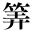
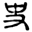
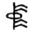

支那に於ける史の起源
内藤湖南
支那に於ける史の起源に就て述べようと思ふのですが、此の史といふ字には支那では二樣の意義を持つ事になります、一は歴史の書籍の方の意義で、一は歴史を掌る官吏、即ち史官の事になります、其の史籍の方の起源になりますと種々込入つて居りますので、今日は單に史官の起原の事に就てお話を致さうと思ひます。
支那に史官のあつたと云ふ傳説は大分古くからあります、非常に古い話になりますと黄帝の時に倉頡、沮誦といふ史官があつたと云ふ言傳があります、夫から支那で今日遺つて居る歴史の體裁の本の中で古いのは先づ尚書即ち書經でありますが、その中に堯舜の事を書きました堯典は、尚書正義と云ふ唐の孔穎達といふ人の書いたものに據ると、夏の時の史官が之を書いたと云て居ります、然うすると夏の代から史官があつたやうに見えるのであります、併し夫は單に傳説の上に殘つて居るだけでありまして、確かに史官があつたと云ふ事の證據にはなりませぬ、多少證據になると申しますものは、今日、東洋史の陳列室で御覽になつたらうと思ひますが、彼の殷虚即ち殷の都の跡から十數年前から追々發見されました龜の甲とか獸骨に彫りました文字の中に史といふ字があります、夫であれは確かに殷時代の物となつて居りますから、殷の時代に史といふものがあつたといふことが確になつて參りました、黄帝の時の倉頡といふ人は史官といふ言傳もありますが、又最初の文字の製作者といふ言傳へにもなつて居ります、倉頡が史官か何うかと云ふ事は此の如くハッキリしませぬのみならず、勿論黄帝といふ人からしてハッキリしないのでありますが、ともかく沮誦といふ史官などがある所を見ますと、支那人が古代の史官といふものに就て下した想像は、日本の「語部」同樣、言葉を以て語り傳へた形蹟があるものと思はれます、言葉を以て傳へたと云ふ所から沮誦といふ誦の名が出て來たと思ひます。のみならず莊子の中に、昔の古い傳へのある事を書きました所に、何々は之を副墨之子に聞き、副墨の子は之を洛誦之孫に聞くと云ふ事が書いてある、副墨の子といふのは何か文字を書く方から云つたものに違ひない、其の書記す所の記録は之を洛誦に聞くと云ふのは、洛誦は言葉で語り傳へた事を言ひ現はしたに違ひない、然ういふ事を莊子の中に言てありますのでも、古くは言葉で語り繼で居つたといふ傳説のあつた事が分る。
勿論史といふ文字が明らかに出來ましてから後でも、大體史といふものが之を言葉で傳へる者であつたか、即ち語り傳へたものであるや否やと云ふことは判然しませぬ、尤も禮記などには少し判然と分けてあります、禮記の曲禮の中に史載筆、士載言と斯う擧げてあります、士とはその當時の意義からいへば、裁判官であります、裁判官の方で言を載せると云ふ事になつて居り、「史」といふものゝ方が筆を載せることになつて居る、裁判官が言を載せるといふことは少しをかしいですが、夫は又別に理由があるのであります、兎に角歴史の方の「史」といふ者は筆を持つて居るといふ事は明らかに言てあります。
昔の筆といふものは何ういふ物かと申すと、最初は殷虚から出ました龜の甲などに字を現はしてある如く「ナイフ」のやうな物を以て彫付るのであります、其のナイフのやうな物が即ち筆であるのです、尤も禮記は支那の古書としては經書の中では最も晩く出來ました本であります、即ち禮記の中の大部分は今日の進歩した經學者の考へとしては多くは漢の初頃に出來たものである、勿論戰國から書續いたものでありませうが、此の二語の如きは之は古書を鑑別する見方に依つて觀ますと云ふと、禮記の編纂された時よりは或はモツト古く斯ういふ語のありましたものを茲に載せたかと考へられますが、兎に角古書の中では比較的新らしいものであります、夫で史と云ふ者の職務に就ても極めて簡短な事を書いてある。
もう少し古書に於て史に就て詳しく書いたものが無いかと申しますと、今日在ります所の古書には更に詳細なのがあります、勿論古書の鑑別の仕方は餘程面倒なもので、其の眞僞に就ては種々議論がありますが、古い制度を詳しく書きましたのは周禮である、周禮の中に史官の職務に就て詳細な記事があります、周禮にはあらゆる官職に就て六つに大別してある、天官、地官、春官、夏官、秋官、冬官としてあります、其中春官の部類に史の職務の事が載つて居ります、夫には史を五つに分けてあります、大史、小史、内史、外史、御史であります、然うして其の職務の細目を擧げて居ります。
第一、大史と云ふものゝ職務に就ては、邦の法典を掌る、邦と申しますと天子の直領です、官府の治め方の法を掌る、都鄙の治め方の規則を掌ると云ふことになつて居りますが、其の中に邦國、都鄙及び人民の約束に關係した書類を藏ひ込んで居つて、六官即ち天官より冬官までの六官でありますが、其の六官の書類の副本を取つて置くと云ふことが書いてあります、若し其の約束に就て訴訟のやうな事があつて調べなければならぬことがあると、大史は庫を啓いてそれと引合せる、然うしてそれに合はないと罰する、斯ういふことを書いてある、詰り人民の約束、裁判事件に關係したやうな書類を藏つて置く、それが一つの大事な職務になつて居ります。
それからモウ一つは暦の事を掌る。又暦を頒つ事、夫から暦に因つて王の職務の年中行事がありまして、日本でも昔朝廷には年中行事がありましたが、其の年中行事の規定に依つて王の動作を大史が差圖をするのであります、大祭祀のあります時は、祭の執事者と日を卜ひ、又祭の次第書、――「禮書」と書いてありますが、次第書を讀んで其の事柄の順序を立てる、祭の日には亦其の祭のプログラムの書いた物を持つて然うして人々の位置や何かを極める。
それから其次に王の職務として諸侯を會同朝覲せしめる事がありますが、諸侯が會同して來た時には、矢張り書付を土臺として其の禮の事をして始末を合せる、贈物をする時にも其の次第書を書いた物を以て王に其の次第を皆告げる。
それから大きな軍さのありました時には、當時に大師と申しまして盲人で以て種々澤山物を覺えて居つて、「語部」の役をやつて居る官がありましたが、これが王の顧問官になる者であります、大史も其の盲人と一緒に車に乘つて王の顧問官になつて天文のことに關係した事を述べる、夫から國が遷る時、周も長安附近の地方に居つたのが洛陽の方に遷りましたが、然ういふやうに國の遷る事がありますと、其の遷り方に關する法書を持つて王の先きに行く、大きな喪の事がある時には喪の次第を書いたものを持て然うして務める、それから誄詞をやる事なども大史が勤める、夫から小さい喪、諸侯以下の喪、公卿大夫の喪になりますと、天子から諡を賜ふといふ職務を大史が勤める。
其外に周の時には射禮を重じました、大射禮も小射禮もありますが、其の時に「飾レ中舍レ※執二其禮事一」とあります、中といふのは※を容れる道具であります、※といふのは何かと云ふに、弓を射る時の弓の數取の籤である、其※を容れる物を「中」と云ふ、何本矢が中つたかと云ふ事を計算する物が※で、※を容れるものが中である、之を飾りつけるものが大史の職務になつて居る。
其次に小史といふものゝ職務を擧げて、國の記録を掌つて居つて、公卿大夫其外の系圖を定め、昭穆即ち親族の順序を定め、何か事があつた時には王の忌むべき事、昔は種々な事を忌みました、日本でも「かたたがひ」などいふことがありましたが、然ういふ忌む事を王に告げる、大いなる祭があつた時には禮法を讀む職務になります、それから大いなる喪、大いなる會同、大いなる賓客、大いなる軍のあつた時、之は大史の職務を助ける、凡て國の事で禮法次第書を掌ることは、其の中の大事は大史が掌るが、小事は小史が掌る、諡を賜はり誄を讀むことも關係して居る。
この大史に附屬した官で昔から在來りました馮相氏、保章氏といふものを次に擧げてありますが、此の事をお話しますと長くなりますから省きます。
それから内史といふ者があります、これは制度、法律に關係したことを掌ることを書いてあります、爵を與へること、禄を與へること、廢すること、置くこと、殺すこと、生すこと、與へること、奪ふこと。この八つの事を掌ることが書いてあります、それから諸侯に命令、公卿大夫などに官を申し付ること、策命を書くことを書いてあります、それから王の直領の中の事柄は内史が之を讀むといふことが書いてある、大體然ういふ風な命令に關係したことを多く掌る官である。
それから外史でありますが、これは外令を書することを掌ると書いてあります、王の直の領分以外の命令に關することを掌る、それから三皇五帝の書を掌る、即ち周代にも自分の王朝の時の記録でなしにその以前の王朝のことを掌るのは外史が掌ることになつて居る、又周の王朝に使つて居る文字が一般に普及するやうに、諸侯の國々によつて文字の使方が違はないやうにする爲に文字を四方に達するやうなことを掌る、それから亦書いた物を持つて四方に使ひする時其の文を書く、昔は口上の使者もあり文書を持て行く使者もあります、文書を持つて行く使者の時に其の文書を書くといふのが外史の職務であります。
其次に御史であります、御史は邦國都鄙及び萬民を治むることを掌ると云ふことを書いてありまして、これは周の時の冢宰の副官になるのだと云ふことを書いてあります。大體然ういふ風なことで五つの種類の史の職務がありますが、其外に周禮では各々の官に皆府史胥徒と申す者があります、此際の史といふものは今日の書記官、書記といふやうな事柄でありまして、何でも物を書くやうなものを史と申しました。其れだけが周禮に在る史の職務の大體でありますが、併し前にも申しました如く、周禮と云ふ本は殊に古書の中で眞僞の議論の喧ましいものであります、或種類の學者、殊に近年支那で最新の經學をやる人には周禮といふものは僞書といふ説が大分多いのであります、亦周禮を信用する人もあります、一體周禮の中の何處迄信用が出來て何處まで信用が出來ぬと云ふことは、專門の學者の難かしいことになつて居ります、で吾々は專門家でもありませぬから、其の判斷をすることが餘程困難でありますが、併し今日に於いて吾々が周禮の中で何處までが安全で信ずることが出來るかと云ふことをきめる可き標準が無いではありませぬ。
それは今申上げた通り周禮を信ずる學派と信じない學派と二つあります、支那ではそれを古文學派、今文學派と申します、周禮を信ずる學派を古文學派と申し、周禮を信じない學派を今文學派と申します、それ故に簡短に申せば二通りに分れて居る、それで其の古文、今文といふ由來まで申しますと長くなりますが、大體秦が書を焚きまして漢で學問が興りました、最初に興りましたのが今文學で、秦漢以前に行はれた古い文字は漢代の人には大分讀みにくゝなつて居る、漢の時に通用して居りました文字は今日で申せば隸書でありますが、其の讀みにくい古文をその當時通用の文字に改めた書が最初に行はれた、それを今文の易とか、書とかといひます、其後王莽が勢力を得ました頃から古文の學問が流行つて參りました、それは孔子の家の跡から古い竹簡を掘出したことがある、然ういふ本には古文で書いてあります、それを讀むことを古文の學問といひます、其方を盛んに研究する人を古文學派といふことにしたのであります。
周禮は古文學派に屬する經書でありまして、今文にはありませぬ。今日周禮の中で何處まで信じて宜いかと云ふことを多少安全に定むることは、反對派である今文學派の方で信じて居る古書、即ち禮記、儀禮の中に何處まで周禮に在ることがあるかと云ふことを確めるが宜い、今文學派のやつて居る所と古文學派の云ふ所を引合せて兩方とも一致することは多少信ずることが出來ると考へた方が宜からうと思ひます、それは勿論私共が格別骨を折らぬでも其點を注意して支那で研究して居る人もあります、其方の研究に依つて今申上げました此の五つの史官のことを段々調べて見ますといふと或る結果が見はれて來ます、勿論支那人の調べたのに多少私の少し許り調べたのを附加へてお話しすると、大史とは何ういふ風なものであるかと申しますと、土臺今文の學問といふものは周の制度に關する見解が周禮とはスツカリ違ふ、周禮の方では天官から冬官まで六つの官を定めて居りますが、其の六官の立て方さへも古文と違ひます。
今文派で大史といふのは第一どういふ所に載つて居るかと云ふと禮記に載つて居ります、禮記の學問は總て今文の學問であります、禮記の一番眞先きの曲禮（コクライ）の中に天官に六大ありと云ふことが書いてある、夫には大宰、大宗、大史、大祝、大士、大卜、斯う書いてあります、周禮の方では大史といふ官は春官に入つて居りますが、是では天官の方に入つて居ります、其處には何ういふ職務をするかと云ふことは書いてありませぬが、大史の官職を今文の方で詳しく書いてあるのは何に在るかと申しますと儀禮の方にあります。
儀禮は今文家が信ずる所の經でありまして、此の方には大史の職務を書いてありますが、それは周禮の中に在ります大史の職務の中で射禮の時に弓の數取をする職務の事だけを主もに書いてあります、兎に角澤山周禮の中に種々な大史の職務がありますが、其中今文の方の説と合ふのは儀禮に書いてある弓の數取をする職務だけであります、それから小史のことに就きましても儀禮の大射禮の所に出て居ります、矢張りこれが大史を助けて弓の數取をする職務のことを書いてあります。
それから内史、外史であります、内史は尚書や左傳の中にも出て居ります、策命を書する事、諸侯や何かに策命を下す時に掌ることが書てあります、是だけは古文も今文も一致するのであります、其外、内史に關係しますことは漢書の百官公卿表にあります、其處には内史は周代から在る官であつて秦の時代にも周の制度に由つて内史といふものがある、何ういふ事を掌つて居るかと云ふと、百官公卿表に在るものは天領の政治を掌る者を内史と云て居ります、そこで周禮の方に返つて來て調べて見ますと云ふと、詰り王の八通りの職務を掌ると云ふことと多少關係を有ちます、右の如く内史の官に於きましては古文學派の説も今文學派の説も合ふ事になります、外史に關することは今文には全く見えないが、左傳には單に「外史を召して惡臣を掌る」と云ふ事が書いてありまして、周禮にある外史の職務とはトント合はないのであります、外史の職務が同じ古文の中でも、周禮と左傳と合はないとしますと、判然した事は分りませぬ、御史の方の官は矢張り漢書の百官公卿表に之は秦代からある官であると書いてありますけれども、實はモツト前から在りますので、何誰も御承知でありませうが有名なる※池の會に秦王が趙王に瑟を鼓せしめ、趙王が秦王に缶を打たしめた、その時に各々御史をして其事を書かしめたといふことがあります、夫は祕書役のやうなものであると思ひます、秦の始皇の時代になつても最初は王の手許のことを掌る役で祕書役であります、支那のやうな長い專制の政治の國では、君王の左右に居つて祕書役をする者が大いなる權力を占めます、支那の歴代官制の沿革を觀ますと、大抵王の祕書役であつた者が後に宰相の職に變化して居る、秦以前の御史は王の祕密の役人であります、それから漢の時は三公の一に加はるやうになつて來た、所で其の變化は分つて居りますが、周公の制度とも云ふ可き周禮に其官が在つたと云ふことは信じられないと今文學者の方は言うて居る。
其處で此の五つの史のことを考へて觀ますと、古文と今文と好く合ふ點と合はない點の在ることが判ります、外史と御史は今文と古文と合はぬ、それが周の時から在つたことは信じられぬといふことになつて居ります、それで大史、小史、内史のことは、大體合ふ所もあるのでありますが、其中最も早く出來最も重い官でもあり亦最も史官の根本でもあつたらうと思ふのは、大史小史を一緒にした史といふものであらうと思ふ、其の史の中の分職で王の直領のことを掌る者が内史と云ふ者になつたらうと思ふ、其の大史小史の職務の中で今文と古文と一致して居るのは射禮の時に弓の數取をするといふことだけであります。
支那の古いことを研究しますのに、文字の研究からすることがあります、それで史といふ字は一體どういふ字かと云ふことの研究が從來何うなつて居るかと云ふことに就て少し許りお話をして見たいと思ふ、何時でも古い文字の研究に引出されるものは、後漢の中頃に出ました許愼の「説文」といふ字書である、説文は文字を皆篆書で書いて居るので史の字は「※」斯ういふ形になつて居る、説文は之に何ういふ解釋を下して居るかと申すと「史記事者也、从又持中、中正也」とあります、又は物を持つ手の形で、説文には又に中を持するに从がふ、中は正なり、此の解釋を申しますと、中は正なりで史官は昔から正しいことを書く筈の者だと云ふやうに説文は解釋して居る、實は之は史官が始めて出來た時の史の解釋としては信用が出來ない、是に對して昔から學者の間に異論があるのであります。
近年支那で古い文字を大に研究しました人に呉大澂といふ人があります、之は日清戰爭の頃には湖南巡撫の官で防禦軍の大將として出て來た人でありますが、此人は古い文字の研究家であります、此人が説文の史字の解釋に異論を唱へて居ります、この人の解釋では中正の中といふ字の古い銅器などに出て居る形を見ますと「※」の形をして居らぬ、「※」の形になつて居る、之は旗の形を現はしたので、即ち中の字の本來の形である、史の字の中の部分は之とは異つて居るので、之は簡册の形で史は手に簡を執るといふ字だと解釋して居る、又清朝の始めに有名な江永といふ學者がある、江永の有名の著述に、周禮疑義擧要といふ本がある、その中に凡そ官府の簿書は之を中といふ、夫で昔秦の始皇の時には治中と云ふ官がある、又周禮の中にも小司寇の部に、庶民の獄訟の中を斷ずると云ふやうなことがある、之は中といふのは役所の帳面の事を謂ふのである、其處で文書を掌る者を史といふのは、役所の帳面を手に持つて居る形である、之が史と云ふ字の根本の意味である、史といふ官は前にも申しました通り府史胥徒といつて、種々な官の史と云ふ者があります、其所で帳面を持つて居る形で以て史と云ふものが出來たのである、これが江永の説である、此説は餘程好い所がありまして、中と云ふものが簿書の意味だと云ふことから史の義を解釋した、呉大澂の方は史の字の中が、中正の中でないといふ上から解釋したのでありますが、夫に就て私はもう少し深く考へて見たいと思ふのです。
近來京都に來て居る羅振玉といふ學者は文字のことに精通して居る人であるが、此人が殷虚書契の考釋の中に、中の字は普通の中の時は※ともかき※ともなつて居る、史の上の中の字は※斯ういふ形になつて居る、中正の中とは違ふと云ふことを云て居る、其は呉大澂の説も羅氏の説も或點までは一致するのであります、併し其の史の上の中といふ根本の意味は何であるかと云ふと、私は簡册もしくは簿書の意義になる前に、弓の數取の※を入れる中の意味と解釋したい、前に申しました如く、周禮に「中を飾り※を舍き其の禮事を執る」と云ふことがあります、其の中、又儀禮に載つて居る中でありますが、中は物を數へる※を器の中に入れた形※斯ういう形に※を舍く、其の形を極めて簡單に現はした時は「※」此の字になる、其れを手に持つて居るのが即ち史になつたのである、之が丁度今申上た儀禮と周禮と一致する所の史の意味から考へて見て、それから亦文字の形から考へて見ても、何の點から考へても宜いと思ひます。
最初の史と云ふ職務は弓の數取であつたらうと思ひます、今日でも球などを就いてゲームをする人が數取が側に居つてチヤンと數を數へてるやうなもので、昔周の時には大射禮といふものがあります、隣國との境に弓を射る事が禮儀になつて居る、其の數を取ることは餘程必要な職務であつて、それが史であつたものと思ふ、それは儀禮に出て居る大史小史である、それが亦周禮に載つて居る大史にも當る、私は此の考を後に羅振玉氏に話しました所が、夫は宜からうと云ふことで、幾らか安心をしました、それは最初の史官の話でありますが、昔は數をかぞへるといふ事は餘程大事なことでありまして、文字の十分發達しない時から、數に依つて物を記憶する、結繩の政も數のことから出て居る、又支那で天下を治むる大法を書いた尚書の洪範篇には、其の大法を九つの項目に分けたので、其の各々の中に五とか六とか或は八とかの小項目を系けてあつて、何でも數で記憶するやうに作つてありますから、數を記憶さすと云ふことは餘程肝心な事であつたと思ひます、夫で第一史の職務といふものは弓の中つた數をかぞへる所から、其外の數を記憶することも段々の史の職務になつて來たのであらうかと考へます。
數をかぞへると云ふことが段々發達しますと、昔は暦日天文の事が餘程大切なことになります、數の發達したのが古代では天文の職務であります、そこで大史の職務の中には天文の職務が主もなる職務になつて入つて來た、それから段々史といふものが筆を執つて物を書くやうになつたらうと思ふのでありますが、兎に角史官の起原は然ういふ所から來た、それは何時代頃からかと云ふと、殷虚の龜の甲に書いてあつた所から觀れば、殷代には既に在つたらうと思ひます。
夫から史官の盛んになつたのは周の時代と考へます、周の時代には史の職務を苗字同樣にしたものがあります、史某、大史某、内史某と云ふ人もありました、殊に周の制度を建てた者で周公と並び稱せられた史佚といふ人があります、之は傳説に依れば周公と並んで聖人と稱せられました、即ち史官で最も豪い人は聖人とも稱せられました、今日知られて居ります所に依ると、殷代では史と云ふ職務の人に豪い人が無くて、却つて巫某といふ人に有名な人がある、例へば巫賢、巫咸などがあります、殷では鬼神を祭ることを尊ぶ風俗があります、そこで殷代では神を祭る方の職務の巫の方に賢人とも謂はるゝ宰相同樣の人があつたが、夫が周代になつて史といふ職務を帶びた人に聖人と云ふやうな者の出來たことは、史官といふものが周代に於て盛んになつたといふことが推測さるゝやうでもあり、其の職務も前に申しましたやうな種々周禮に在るやうな職務を帶びるやうになつたと考へます、周の頃は多くの官は皆日本の古代同樣で世襲である、此の史に關係した職務も世襲である、然うして史と云ふ職務はいろいろの職務の中でも非常に神聖の職務として信じられて居つた、尤も古代の職務は日官でも、陶器を作る官でも神聖のものと多少感じられて居つたので、官が即ち家であつて家即ち官である、家の職務は神聖であつて外の家で奪ふことは出來ぬものと大抵極められて居つた。
史家の職務の神聖と云ふことに就ては、其の事蹟も種々ありますが、直筆を以て有名なる晉の董狐と云ふやうな者が史の職務を枉げず直筆で勤めたと云ふやうな事も、世襲に史官の職務を持つて居つたから、立派な直筆が出來たことと考へます、齊の崔杼といふ者が齊の君を弑した時に、齊の國に大史、南史といふ史官の家があつた、崔杼其君を弑すといふことを大史氏の史官が記録した、崔杼が其の記録した者を殺した、所が其の弟が亦同樣な記録をした、又其の弟を殺した、處が南史氏の家で大史の家の兄弟が二人まで崔杼に殺されたと聞いて自分が行つて其のことを書かうと簡を執つて出掛けて行きました所が、其の途中で、大史氏の今一人の弟が崔杼君を弑すと書いた、所で到底崔杼の權力で史家の直筆を止めることが出來ないと感じて、そのまゝ書きのこさして了つたと云ふことを聞いて南史氏が安心して歸つたと云ふ話がある、然ういふ風に史官の職務といふものは非常に重ぜられたものでありますが、之は天子なり、諸侯なりの顧問役のやうな職務を執つて居るから、重要な官と考へられて居つたらうと思ひます、秦漢以後になりますと、其の職務の模樣も變り官吏は世襲でなくして、天子から命ぜられてなることになりましたから、其人一代かぎり命ぜられるのでありますけれども、史は直筆を曲げないものと云ふ言傳へだけは支那に遺つて參りましたのは、斯ういふ起原があるからで、大體史の起原は數を掌り、又天文を掌るいろ／＼の數を記憶することから發達したものと考へます。
今日お話し致したいと思ふことは大體其位で盡きて居るのであります、唯だ茲に全く問題以外でお話して置き度いのは、今度地理歴史の教職を有つて居られる諸君の御會合といふことで、種々中等學校の課業に對して研究して居られるので隨分大切な問題も出て居るやうであります、昨年あたりも種々の問題が出て居りまして、夫が決議されました結果相當の效力を收めて居るやうに聞いて居ります、今年はいろ／＼歴史上の問題も出て居り、私の關係して居る東洋史の教授に關係したことも出て居りますが、今日のお話には全く關係のないことでありますけれども、それに就いて一言御注意を申上て置きたいと思ひます。それは何處かの學校から御提出になつたことで「東洋史の教授を左の方針に改むるの可否」と云ふものが出て居ります、即ち近代史を主として古代史には近代并に日本に關係あることを授くる云々といふことであります、私も斯ういふ風な考を曾て持つたことがあるのでありますが、中等學校で歴史科を始めます時は第一に國史を教へられるのでありませう、其の國史を中心として外の東洋史でも西洋史でもそれに關係あることから教へてゆくといふことは學科の關係上都合の好いことであらうと思ひます、其の授けられる方法に於ては私は其説を至つて贊成を致します、それから又教科書の方針も多少然ういふ風に改めると云ふやうなことも全く不贊成でありませぬ、只だ斯ういふ風な問題が出ますと此の説が可いと云ふことになつて、然うして其の方針で以て教科書を作ると云ふことになつて、何うかすると今迄の標準をスツカリ變へて了つて、新らしい標準に據つてやる考が出て來る、其時は又何うかと云ふと、今まで餘り一般的歴史家を養成するやうな項目を授けて居つたのが、殊に極端にひつくり返つて、餘り一方に偏した考への教科書の續出する憂が無いかと心配いたします。東洋といふ中にも、支那とか印度とか又中央亞細亞の國々もありますが、殊に支那のことなどに於きましては、日本との關係は多少西洋の諸國から東洋のことを知るといふやうなことと譯が違ふ點があらうと思ひます、日本の支那に於ける關係は、日本の文化を獨立したものとしての考から申しますと、日本の文化の起原は日本の開闢から獨立してあると考へて居れば、一番都合が好いのでありますが、多少公平に之を考へますと、日本の文化は普通二千何百年間知られて居る、その日本の歴史が始まつた時、其時に日本が有つて居た所の文化は、日本が根本から必ずしも有つて居たのでなくして、矢張り前に發達した國から其の文化を受けて居ることを承認しなければならぬ、然うしますと東洋の古代といふやうなことは單に東洋の古代といふやうなものでなくして、日本の歴史の無い前の時代、日本の文化の由つて來る所を知るに必要なものであります、西洋歴史に致した處が、英、佛、其他現在の諸國の創立はソンナに古いものではありませぬが、其の古代史たる希臘羅馬を除外して粗末に取扱ふことは決して無い、希臘羅馬の古代の文化を知らなければ各々の本國の文化が分らないことになる、日本の支那に於ける關係は然ういふ所を參酌しなければならぬ、單に自國に關係のないことと云ふことで以前のことを切捨てると、そこに間違つた見解が出て來るかと思ふ、古代のことは日本史と東洋現代に關係のあることと云ふことにしてありますから、其所に注意すれば宜しいのでありますが、此の關係のあることといふものを巧みに書いて、然うして間違ひなく其の系統を立てるといふことは、專門の歴史家でなければ出來ぬことで、中々困難のことであらうと思ふ、それで今日の中等學校の教科書は隨分專門の學者も書きますが、然うでない者が書けば、一寸したことでも誤つて教科書を書いて文部省の檢定を受ける、文部省の檢定官にも間違ひない人ばかり居るかと云ふと私は然うは信ずることは出來ませぬ、一寸檢定官が誤つた見方でそれを通して教科書にすると、多くの人は其の先例に據つて教科書を作る、今日では私共同僚の桑原君の教科書は東洋歴史の標準といふやうになつて居る、多くの教科書の標準として桑原君のやうな專門家の確かな物が手本になると好いけれども、一寸誤つた物を書いてそれが檢定されました時に、其れに據つて澤山の教科書が出來ると、檢定官も前に出來たものゝ例に依つて檢定するやうになつて居る、其の誤の例で自分が發見して居る事項もある、それを擧げろと云へば私は何時でも擧げてお目にかけます、詰り檢定官の智識が餘り當てになりませぬ、夫だから若し教科書の方針を變へるといふやうなことが出來て來ますと、餘り極端に走ると云ふやうな傾きが起らぬかと思ひますから、其點を中等學校に於て其の職務に從事して居られる方は充分御注意下さることを希望する次第であります、丁度斯ういふ問題が出て居りますから一言御注意を申上げて置きたいと思ひます。
（大正四年十二月六日中等學校地理歴史教員協議會講演）
底本：「内藤湖南全集 第七巻」筑摩書房
1970（昭和45）年2月25日発行
1976（昭和51）年10月10日第2刷
底本の親本：「研幾小録」弘文堂
1928（昭和3）年4月発行
初出：中等学校地理歴史教員協議会講演
1915（大正4）年12月6日
入力：はまなかひとし
校正：菅野朋子
ファイル作成：野口英司
2001年8月30日公開
2003年5月25日修正
青空文庫作成ファイル：
このファイルは、インターネットの図書館、青空文庫（http://www.aozora.gr.jp/）で作られました。入力、校正、制作にあたったのは、ボランティアの皆さんです。
●表記について
・本文中の「／＼」は、二倍の踊り字（「く」を縦に長くしたような形の繰り返し記号）。
・一、二、三、レ、上、中、下は返り点。
・本文中の※は、底本では次のような漢字（JIS外字）が使われている。
※執二
※を容れる道具
※といふのは何かと云ふに、
其※を容れる物を「中」と云ふ、
計算する物が※で
※を容れるものが中である、
弓の數取の※を入れる中の意味と解釋したい、
「中を飾り※を舍き其の禮事を執る」
中は物を數へる※を器の中に
|

第3水準1-89-64
|
|
有名なる※池の會に
|
第3水準1-87-19
|
|
「※」斯ういふ形になつて居る、
|

|
|
古い銅器などに出て居る形を見ますと「※」の形をして居らぬ、「※」の形になつて居る、
|

|
|
中の字は普通の中の時は※ともかき※ともなつて居る
|

|
史の上の中の字は※斯ういふ形になつて居る
極めて簡單に現はした時は「※」此の字になる
|
|
|
※斯ういう形に※を舍く
|
該当なし、第3水準1-89-64
|